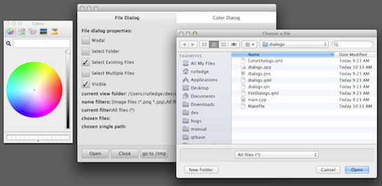

Qt Quick System Dialog Examples
This example demonstrates the system dialog types in QML.

This example demonstrates the system dialogs in the Qt Quick Dialogs module. The appearance and behavior is platform-dependent.
A FileDialog is used to choose a single file, multiple files or a single directory, depending on how it is configured.
FileDialog { id: fileDialog visible: fileDialogVisible.checked modality: fileDialogModal.checked ? Qt.WindowModal : Qt.NonModal title: fileDialogSelectFolder.checked ? "Choose a folder" : (fileDialogSelectMultiple.checked ? "Choose some files" : "Choose a file") selectExisting: fileDialogSelectExisting.checked selectMultiple: fileDialogSelectMultiple.checked selectFolder: fileDialogSelectFolder.checked nameFilters: [ "Image files (*.png *.jpg)", "All files (*)" ] selectedNameFilter: "All files (*)" sidebarVisible: fileDialogSidebarVisible.checked onAccepted: { console.log("Accepted: " + fileUrls) if (fileDialogOpenFiles.checked) for (var i = 0; i < fileUrls.length; ++i) Qt.openUrlExternally(fileUrls[i]) } onRejected: { console.log("Rejected") } }
A ColorDialog is used to choose a color, with or without alpha (transparency) depending on how it is configured.
ColorDialog { id: colorDialog visible: colorDialogVisible.checked modality: colorDialogModal.checked ? Qt.WindowModal : Qt.NonModal title: "Choose a color" color: "green" showAlphaChannel: colorDialogAlpha.checked onAccepted: { console.log("Accepted: " + color) } onRejected: { console.log("Rejected") } }
The example can be built as a standalone executable, but each type of dialog is demonstrated in a separate QML file which can also be run separately with qmlscene.